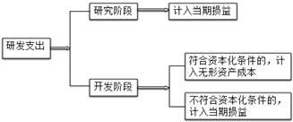
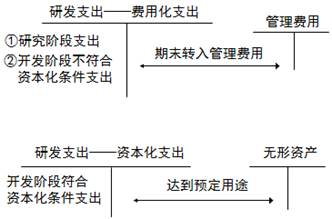
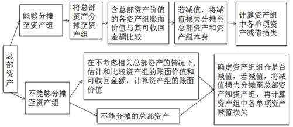

存货成本的结转
1.生产领用
借：制造费用
贷：周转材料——包装物
2.出借包装物及随同产品出售不单独计价的包装物
借：销售费用
贷：周转材料——包装物
因为出售却没有收入，且在销售环节所发生，所以记入销售费用3.出祖包装物及随同产品出售单独计价的包装物
借：其他业务成本
贷：周转材料——包装物
*没有形成收入的，包装物摊销费用记入销售费用；有收入的记入其他业务收入，成本记入其他业务成本高危行业企业按照国家规定提取安全生产费
| 提取安全费用时 | 借：生产成品（或当期损益） 贷：专项储备 |
| 使用提取的安全费 属于费用性支出，直接冲减专项储备 |
借：专项储备 贷：银行存款 |
| 使用提取的安全费 形成固定资产 |
借：在建工程 应交税费 贷：银行存款 应付职工薪酬 借：固定资产 贷：在建工程 借：专项储备 贷：累计折旧 |
“专项储备”科目期末余额在资产负债表所有者权益项目下“其他综合收益”和“盈余公积”之间增设“专项储备”项目反映。
存在弃置费用东奥视频链接
借：固定资产
贷：在建工程
预计负债
借：财务费用（期初预计负债摊余成本*实际利率）
贷：预计负债
借：预计负债
贷：银行存款
解释公告第6号：（1）对于预计负债减少，以固定资产账面价值为限扣减固定资产成本，超出部分确认当期损益。
（2）对于预计负债增加，增加该固定资产成本。
例：固定资产原价50 000万元，账面价值12 500万元，预计负债20 000万元。X日重新确认预计负债现值15 000万元
则：预计负债调减 = 20000-15000 = 5000万元，调整固定资产账面价值 = 12500-5000 = 7500万元
具体例题 轻1 p.47
固定资产折旧
1.固定资产按月计提折旧，当月增加的固定资产，当月不计提，下月起计提折旧；当月减少的固定资产，当月计提折旧，下月起不计提。与无形资产相反
2.尚未办理竣工决算的固定资产，按照估计价值确定成本并计提折旧；待办理竣工决算后按实际成本调整原暂估价值，不需要调整已计提折旧额。
3.更新改造过程中，将账面价值转入在建工程，不计提折旧
4.定期大修理期间照提折旧
折旧方法
1.年限平均法
年折旧额 = （原价-预计净残值）／预计使用年限
2.工作量法
单位工作量折旧额 = （原价-预计净残值）／预计总工作量
3.双倍余额递减法
年折旧额 = 期初固定资产净值*2／预计使用年限
固定资产净值 = 原价 - 累计折旧；最后两年改为年限平均法
4.年数总和法
年折旧额 = （原价-预计净残值）* 年折旧率
年折旧率 = 剩余可使用年数／SUM（使用年限）
持有待售固定资产
满足条件：
1.企业已经就处置该非流动资产作出决议。
2.企业与受让方签订了不可撤销的转让协议。
3.该项转让在一年内完成。
入账价值 = 固定资产账面价值 与 公允价值减去处置费用 孰低计量
原账面价值高于后者的差额，作为资产减值损失记入当期损益。
注意⚠️ 持有待售固定资产作为流动资产列示
若某项资产被归为持有待售，但后来不再满足条件时，企业应当停止将其归为持有待售，并按照下列金额较低者计量：
1.按照之前的账面价值，假定没有归为持有待售情况下原应确认但折旧／摊销或减值进行调整后的金额
*意思就是，从划分日至不再符合确认条件期间的折旧需要补上（追溯）
2.决定不再出售之日的可收回金额
固定资产清查
一、盘盈
作为前期差错处理
借：固定资产
贷：以前年度损益调整
借：以前年度损益调整
贷：盈余公积
利润分配——未分配利润
内部研究开发支出会计处理 
费用化支出期末无余额，资本化支出余额记入资产负债表中的“开发支出”项目
投资性房地产的范围
| 范围 | 注意问题 |
|---|---|
| 已出租的土地使用权 | 计划出租但尚未出租的土地使用权不属于此类 |
| 持有并准备增值后转让的土地使用权 | 这种不多 |
| 已出租的建筑物 | 1.企业拥有产权并以经营租赁方式出租的建筑物。 2.以经营租赁方式租入再转租的不属于此类。（无产权） 3.空置或在建建筑物，企业管理当局作出正式书面决议， 将其用于经营出租且意图短期内不会变化，也应视为投资性房地产。 待出租的建筑物在此之前作为固定资产或存货核算。 |
两种计量模式注意⚠️同一企业只能采用一种模式对所有投资性房地产进行后续计量，不得同时采用两种计量模式。
| 项目 | 成本模式 | 公允价值模式 |
|---|---|---|
| 初始确认 | 记入“投资性房地产”科目 | 记入“投资性房地产——成本”科目 |
| 折旧或摊销 |
同固定／无形资产处理原则 借：其他业务成本 贷：投资性房地产累计折旧／摊销 |
不计提折旧或摊销 |
| 减值 |
按《企业会计准则第8号——资产减值》计提 借：资产减值损失 贷：投资性房地产减值准备 |
不计提减值 |
| 收入 |
借：银行存款 贷：其他业务收入 应交税费——应交增值税（销项税额） |
借：银行存款 贷：其他业务收入 应交税费——应交增值税（销项税额） |
| 公允价值变动 | 不确认 |
确认并记入“公允价值变动损益”科目 公允价值上升： 借：投资性房地产——公允价值变动 贷：公允价值变动损益 公允价值下降作相反分录 |
| 转换 | 可转为公允价值模式 | 不可转为成本模式 |
| 处置 | 冲减投资性房地产账面价值 | 冲减投资性房地产账面价值且转销公允价值变动损益和其他综合收益 |
计量模式的变更
成本模式
arrow_forward
公允价值模式
属于会计政策变更
借：投资性房地产——成本（变更日公允价值）
投资性房地产累计折旧／摊销
投资性房地产减值准备
贷：投资性房地产（原价）
利润分配——未分配利润
盈余公积
投资性房地产转换为非投资性房地产
一、成本模式
| 转为自用房 | 转为存货 |
|---|---|
|
借：固定资产 投资性房地产累计折旧 贷：投资性房地产 累计折旧 |
借：开发产品 投资性房地产累计折旧(摊销) 投资性房地产减值准备 贷：投资性房地产 |
二、公允价值模式
| 转为自用房 | 转为存货 |
|---|---|
|
借：固定资产 贷：投资性房地产——成本 投资性房地产——公允价值变动 公允价值变动损益(差额>0，赚了) |
借：开发产品 贷：投资性房地产——成本 投资性房地产——公允价值变动 公允价值变动损益(差额>0，赚了) |
非投资性房地产转换为投资性房地产
一、成本模式
| 以自用房转 | 以存货转 |
|---|---|
|
借：投资性房地产 累计摊销／折旧 固定／无形资产减值准备 贷：固定／无形资产 投资性房地产累计折旧 投资性房地产减值准备 |
借：投资性房地产 存货跌价准备 贷：开发产品 |
二、公允价值模式
| 以自用房转 | 以存货转 |
|---|---|
|
借：投资性房地产——成本 累计摊销／折旧 固定／无形资产减值准备 公允价值变动损益（公允价值 - 账面价值 < 0） 贷：固定／无形资产 投资性房地产累计折旧 投资性房地产减值准备 其他综合收益（公允价值 - 账面价值 > 0） |
借：投资性房地产——成本 存货跌价准备 公允价值变动损益（公允价值 - 账面价值 < 0） 贷：开发产品 其他综合收益（公允价值 - 账面价值 > 0） |
投资性房地产的处置
采用公允价值模式计量：
借：银行存款
贷：其他业务收入
应交税费——应交增值税（销项税额）
借：其他业务成本
贷：投资性房地产——成本
——公允价值变动
借：其他综合收益
贷：其他业务成本
借：公允价值变动损益
贷：其他业务成本
其他业务成本反映的其实是历史成本，所以要将公允价值变动损益和其他综合收益冲回。
联营企业
1.在董事会或类似权力机构中派有代表。
2.参与被投资单位财务和经营政策制定过程。
3.与被投资单位之间发生重要交易。
4.向被投资单位派出管理人员。
5.向被投资单位提供关键技术资料。
合营企业
1.各参与方均受到合营安排的约束。
2.两个或以上参与方对该安排实施共同控制。
3.任何一个参与方不能单独控制该安排。
权益法：投资单位对被投资单位能够实施共同控制或重大影响
成本法：投资单位能够对被投资单位实施控制
也可以这样理解：成本法是用来核算自己家的东西，权益法用来核算不是自己家但是和自己有关联的东西。
企业合并以外的方式取得长期股权投资，发生的直接费用记入投资成本；支付券商佣金冲减资本公积
资产减值损失的确认与计量
| 资产类别 | 减值后计量基础 | 减值是否可以转回 |
|---|---|---|
| 存货 | 可变现净值 | 可以 |
| 固定资产 | 可收回金额 | 不可以 |
| 投资性房地产（成本模式） | 可收回金额 | 不可以 |
| 长期股权投资 | 可收回金额 | 不可以 |
| 无形资产 | 可收回金额 | 不可以 |
| 开发支出 | 可收回金额 | 不可以 |
| 商誉 | 可收回金额 | 不可以 |
| 持有至到期投资 | 未来现金流量现值 | 可以 |
| 货款和应收款项 | 未来现金流量现值 | 可以 |
| 可供出售金融资产 | 公允价值 | 可以 |
| 递延所得税资产 | 未来应纳税所得额 | 可以 |
内容
资产持续使用过程中预计产生的现金流入
实现资产持续使用过程中产生的现金流入所必需的预计现金流出
外币预计
按以下顺序计算
（1）以外币（结算货币）表示的未来现金流量现值 = ∑[该资产所产生的未来现金流量(结算货币)×该结算货币适用的折现率的折现系数]
（2）以记账本位币表示的现值 = 以外币（结算货币）表示的未来现金流量现值×计算资产未来现金流量现值当日的即期汇率
（3）以记账本位币表示的现值与资产公允价值减去处置费用后的净额相比较,较高者为其可收回金额,根据可收回金额与资产账面价值相比较,确定是否需要确认减值损失以及确认多少减值损失。
考虑因素
| 考虑 | 不考虑 |
|---|---|
| 当前状况为基础预计资产未来现金流量 | 筹资活动和所得税收付产生的现金流量 |
| 通货膨胀因素的考虑应当和折现率相一致 | 可能会发生的、尚未作出承诺的重组事项或与资产改良有关的预计未来现金流量 |
| 涉及内部转移价格的需要作调整 |
资产组减值二次分摊例题 书P.167-168
总部资产的减值测试
金融工具
分类：基本金融工具（债券、股票等）；衍生金融工具（期货、期权、互换等）
核算：确认为金融资产、金融负债或权益工具。
例如：股票是金融工具，发行方形成权益工具，购买方形成金融资产；发行债券也是金融工具，发行方形成金融负债，购买方形成金融资产。
金融负债和权益工具的区分
| 金融负债 | 权益工具 |
|---|---|
| 向其他单位交付现金或其他金融资产的合同义务 | 没有向其他单位交付现金或其他金融资产的合同义务 |
| 在潜在不利条件下，与其他单位交换金融资产或金融负债的合同义务 | 没有在潜在不利条件下与其他单位交换金融资产或金融负债的合同义务 |
| 用企业自身权益工具进行结算的非衍生工具的合同义务，企业根据该合同将交付非固定数量发行方的自身权益工具 | 非衍生工具：（优先股）固定数量的权益工具进行结算 |
| 企业以固定金额的现金或其他金融资产换取固定数量的自身权益工具的衍生工具合同义务除外 | 衍生工具：金额固定（有收款问题所以要固定资金金额），股数固定 |
重点：不付现金，或以固定资产换固定自身权益工具的是权益工具
利润表内容及结构
| 项目 | 本期金额 | 上期金额 |
|---|---|---|
| 一、营业收入 | ||
| 减：营业成本 | ||
| 税金及附加 | ||
| 销售费用 | ||
| 管理费用 | ||
| 财务费用 | ||
| 资产减值损失 | ||
| 加：公允价值变动收益（损失以“-”号填列） | ||
| 投资收益（损失以“-”号填列） | ||
| 其他收益 | ||
| 二、营业利润 | ||
| 加：营业外收入 | ||
| 减：营业外支出 | ||
| 三、利润总额 | ||
| 减：所得税费用 | ||
| 四、净利润 | ||
| 五、其他综合收益 | ||
| 六、综合收益总额 | ||
| 七、每股收益 |